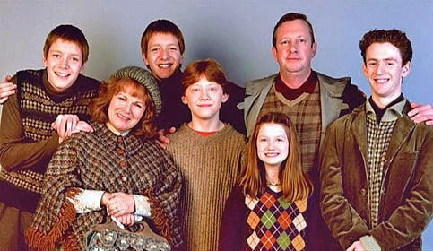

Weasley Family
Tu n'as pas répondu à Hagrid, tu vas plus loin après le chemin de traverse.
Tu te dis "je vais vers cette maison", tu y vas et vous sonnez à la porte,
ils ouvrirent la porte et la maman de Ron, Molly, dit "Bonjour vous êtes sûrement Harry Potter"
Harry répond : "Eh oui c'est moi le fils des Potters", et tous les Weasly disent : "Nous sommes les Weasleys", sauf Ginie ne dit rien elle était dans sa chambre.
Molly dit : "on t'auberge pour la nuit", vous dites "merci c'est gentil"
Il parla avec Ron, Ron dit : "nous allons manger, tu viens avec nous?"
Si tu décides de manger avec eux clique ici
Si tu décides d'aller voir Ginnie clique ici
